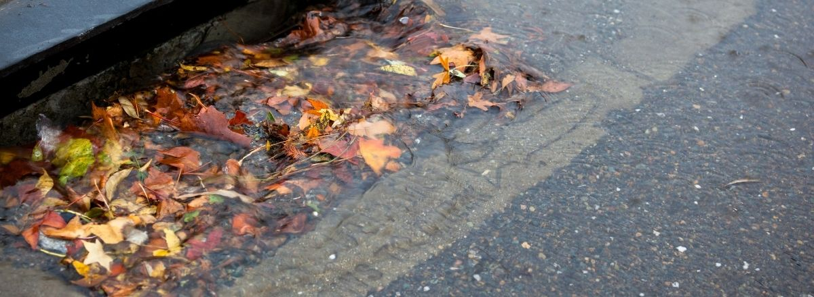

ABOUT DRAINWATCH
Helping drainage concerns be seen.
DrainWatch is a community reporting website for blocked, overflowing, or unsafe drains in Las Piñas City. It gives residents a simple way to pin an issue on a map and share what they see.

Why it matters
Leaves, litter, and other obstructions can slow water flow. When residents share where they notice a problem, the map can make local concerns easier to see and discuss.
Community reports are a source of information, not a guarantee of inspection or repair.
How reports help
Each report adds a location and description to the shared view. People can see whether an issue has been reported, verified, is in progress, or has been marked resolved.
To report an urgent hazard, contact the appropriate local authorities directly.
What the statuses mean
- Reported
- A community member has submitted the issue.
- Verified
- An administrator has reviewed and confirmed the report.
- In progress
- Work to address the issue has been recorded as underway.
- Resolved
- The issue has been marked as addressed.
Classifying a drain
- Partially blocked
- Some water can still pass, but debris or buildup is restricting the drain.
- Fully blocked
- Water cannot pass through the drain because it is completely obstructed.
- Overflowing
- Water is spilling out of or backing up around the drain.
Use the separate Dangerous option for an open drain or a missing cover.
Made by
DrainWatch was created by Sebastian Bite, Hannah Torrevilla, and Bianca Arpon.
About this demo
DrainWatch is a demonstration of a possible community reporting experience, not an official Las Piñas City service. Reports and status updates in the demo should not be treated as official notices or a substitute for city reporting channels.